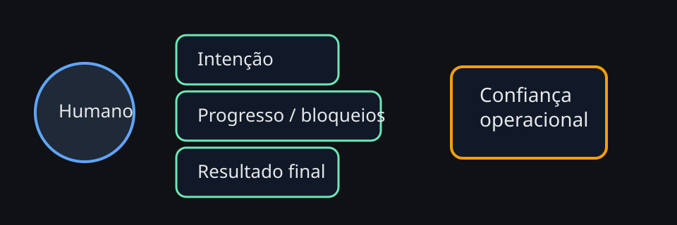

Agente útil não é o que fala mais bonito; é o que reduz atrito cognitivo e deixa claro quando está pensando, agindo, esperando ou pedindo ajuda.
UX para conversar com agentes
Boa UX de agente não nasce só do modelo. Ela vem de formato, timing, visibilidade e respeito ao contexto do humano. Este capítulo organiza padrões simples que melhoram bastante a convivência diária com agentes e, principalmente, mostra como comunicar progresso, risco, canary, rollback e aprovações sem virar ruído.
Diagrama — UX de conversa em camadas

UX não é cosmética
Quando a conversa com o agente é confusa, o custo aparece em forma de retrabalho, pedidos mal interpretados e perda de confiança. Em OpenClaw, boa UX significa deixar claro o que o agente entendeu, o que vai fazer, quando precisa de aprovação e como o humano pode corrigir rumo sem atrito.
Padrões que ajudam de verdade
Confirmação breve de intenção
Antes de agir, o agente resume objetivo, risco e próximo passo.
Atualizações por mudança
Não precisa narrar tudo; só marcos, bloqueios e resultados.
Escalada explícita
Quando há risco, o pedido de aprovação precisa mostrar o comando real ou a ação externa exata.
Estrutura de resposta que reduz atrito
- interpretação da tarefa em uma frase
- plano curto só quando a tarefa é multi-etapas
- execução silenciosa para passos óbvios e seguros
- resultado final com mudança, validação e próximos passos
Modelo operacional de estados visíveis
Uma conversa com agente fica muito mais estável quando o humano consegue inferir em qual estado o trabalho está. Em vez de respostas vagas como "estou vendo isso", prefira estados explícitos:
Entendido
O agente já traduziu o pedido em objetivo concreto e delimitou escopo.
Executando
Há trabalho em andamento, mas ainda não existe decisão nova nem bloqueio relevante.
Aguardando aprovação
Há uma ação sensível, externa ou irreversível que depende de consentimento explícito.
Concluído
O agente entrega resultado, validação e o menor próximo passo útil.
Quando atualizar progresso — e quando calar
Atualização boa é orientada por mudança de estado, não por relógio. Um agente que fala a cada 30 segundos sem novidade gera ansiedade e polui o canal. Um agente que some por tempo demais sem contexto destrói confiança. O equilíbrio costuma ser:
- no início: dizer o que começou e onde vai atuar
- no meio: avisar apenas quando terminou um marco, encontrou bloqueio ou mudou a estratégia
- no fim: resumir impacto, validação e pendências reais
Checklist — UX para tarefas longas
- Diga em uma linha o que começou.
- Atualize apenas em marcos ou bloqueios.
- Ao terminar, cite arquivos, validação e impacto.
- Se algo ficou pendente, diga o porquê e o menor próximo passo.
Bloco prático — comunicando canary sem assustar nem esconder risco
Canary é um tema clássico em que agentes erram a UX: ou banalizam o risco, ou falam em tom apocalíptico. O ideal é comunicar três coisas com precisão: escopo, métrica de saída e critério de rollback.
Vou liberar a mudança para 10% do tráfego interno por 30 minutos.
Vou observar erro, latência p95 e taxa de handoff humano.
Se erro subir acima de 2% ou latência p95 passar de 4s, faço rollback e aviso com o motivo.Isso é melhor do que "subindo em canary agora" porque torna a conversa auditável. O humano entende a experiência esperada, o risco tolerado e o gatilho de reversão.
Bloco prático — como anunciar rollback de forma útil
Rollback não é fracasso de UX; rollback opaco é. Quando o agente reverte algo, a mensagem precisa preservar confiança:
- dizer o que foi revertido
- explicar qual sinal disparou a reversão
- separar fato observado de hipótese de causa
- indicar se o ambiente voltou ao baseline esperado
Rollback concluído da nova política de retries.
Motivo: latência p95 subiu de ~2,1s para ~4,8s no canary de 10%.
Hipótese inicial: backoff excessivo em chamadas ao provedor.
O tráfego voltou ao comportamento anterior e sigo investigando sem impacto novo para os usuários.Repare que a mensagem não teatraliza o incidente nem finge certeza causal antes da hora.
Bloco prático — pedidos de aprovação que realmente ajudam
Pedido de aprovação ruim joga a decisão no colo do humano sem contexto. Pedido bom embala a decisão com o mínimo necessário: ação exata, risco, alternativa mais segura e consequência de não agir.
Ruim
"Posso continuar com uma ação potencialmente sensível?"
Bom
"Preciso rodar git push origin master para publicar a correção já validada localmente. Isso altera o repositório remoto. Se preferir, posso parar aqui e deixar só o commit local."
Esse padrão funciona porque reduz ambiguidade. O humano não precisa adivinhar o que será executado, nem quais são as opções.
Matriz rápida de linguagem por risco
| Nível | Tom recomendado | O que não pode faltar |
|---|---|---|
| Baixo risco | curto e direto | o que começou e o que será entregue |
| Médio risco | calmo e explícito | impacto esperado, validação e opção de espera |
| Alto risco | preciso, auditável e sem eufemismo | ação exata, blast radius, comando real, rollback ou mitigação |
Anti-padrões operacionais de UX
- status teatral: transformar rotina em drama para parecer proativo
- aprovação nebulosa: pedir aval sem mostrar a ação concreta
- rollback silencioso: reverter e só depois admitir que houve problema
- marcos falsos: dizer "quase pronto" sem critério objetivo
- certeza fabricada: confundir hipótese com causa confirmada
Script de referência para tarefas operacionais
Entendi: vou revisar a configuração do gateway e validar se o problema está em bind, auth ou conectividade.
Se eu precisar reiniciar serviço, peço sua aprovação com o comando exato.
Se encontrar uma correção segura e local, aplico e já volto com o que mudou e como validei.Esse tipo de resposta funciona bem porque combina direção, limite e critério de escalada em poucas linhas.
Troubleshooting de confiança na conversa
O humano parece ansioso com silêncio
Reduza janelas opacas. Diga o marco atual, o próximo checkpoint e o que está bloqueando o resultado final.
O agente fala demais
Troque updates cronológicos por updates orientados a decisão: início, bloqueio, aprovação e entrega.
Aprovações geram atrito
Mostre comando real, efeito externo e alternativa segura. A decisão fica mais rápida e menos cansativa.
Rollback assusta o time
Use linguagem factual, diga que o baseline foi restaurado e separe claramente observação, impacto e hipótese.
FAQ rápido
Atualização frequente sempre melhora a UX?
Não. Frequência sem novidade só aumenta custo cognitivo. O que melhora a UX é previsibilidade, não volume.
Posso esconder detalhes técnicos para simplificar?
Você pode resumir, mas não apagar o que é decisivo. Em aprovações e incidentes, o detalhe crítico precisa aparecer.
Quando o agente deve soar mais firme?
Quando existe risco real, estado confirmável e decisão que depende de entendimento preciso. Firmeza não é rudeza; é nitidez.